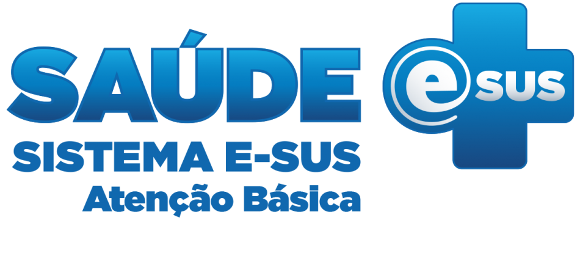
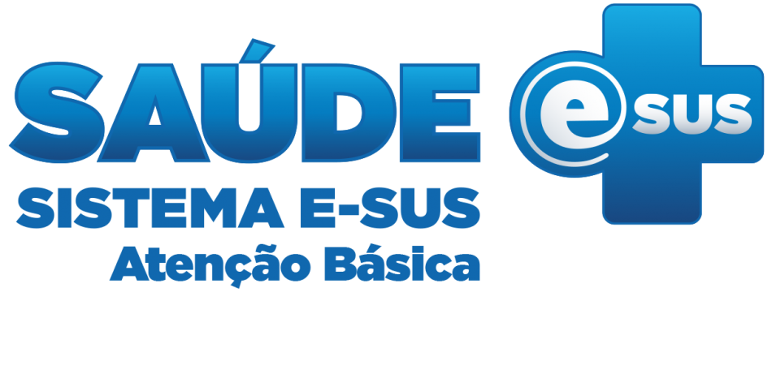

DATACARE

Se você é médico ou enfermeiro e quer ajudar outras regiões do Brasil, faça o seu cadastro aqui. Você receberá um e-mail para confirmar os dados.
Base de dados dos Estados da federação para o enfrentamento ao COVID-19.
100% integrada ao SUS
DATACARE é a plataforma que integra informações para disponibilização, organização e gestão de insumos e equipamentos para todos os tipos de instituições de saúde, desde clínicas até hospitais e UTIs do sistema público de saúde.
Nossa função é otimizar a comunicação entre os Estados da nação, para agilizar os processos de saúde internos de cada instituição. Mantendo a cadeia de medicamentos, equipamento e equipe médica funcionando perfeitamente.
Nós somos uma comunidade que quer estar presente em cada hospital público do Brasil. Estamos conectados para facilitar a comunicação entre quem precisa de ajuda e quem pode ajudar.
 

Dados levantados
-
Mais de 2 mil cilindros de oxigênio transportados para o Amazonas
-
+ de 500 mil seringas distribuídas entre os Estados brasileiros
-
5 mil novos leitos especifíficos para o tratamento de pacientes
-
Mais de 30 mil médicos registrados e atuando entre os Estados
-
+ de 250 mil pacientes beneficiados até o momento
-
R$ 1 bilhão arrecadados para financiamento de pesquisa e desenvolvimento de vacinas
-
30% dos idosos brasileiros já vacinados até o momento